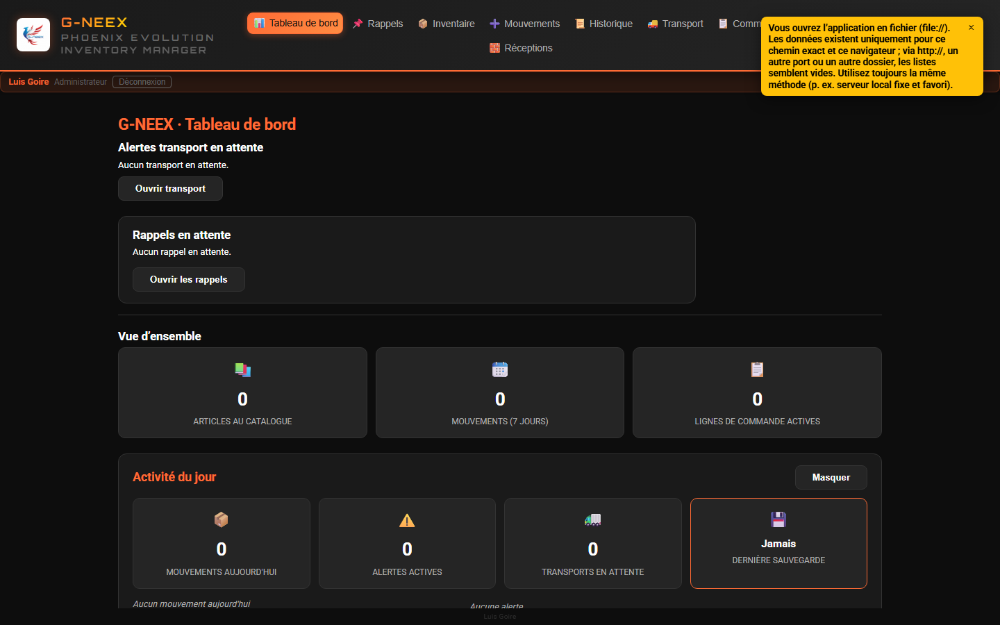
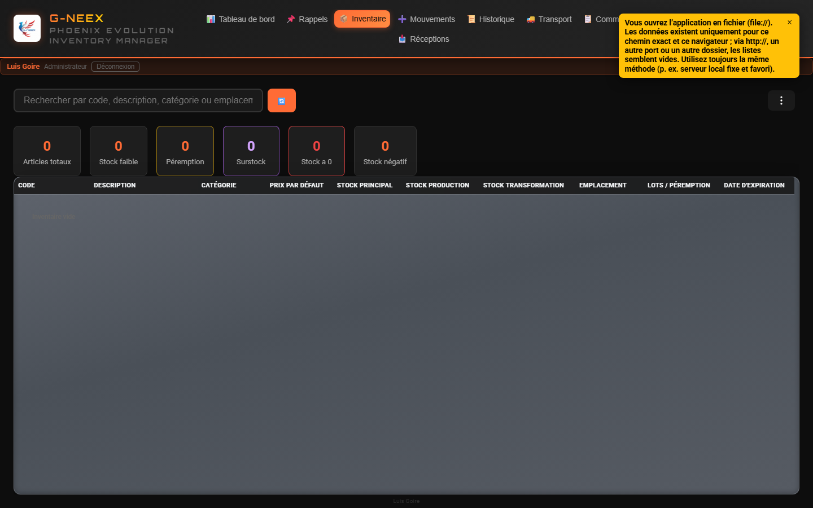
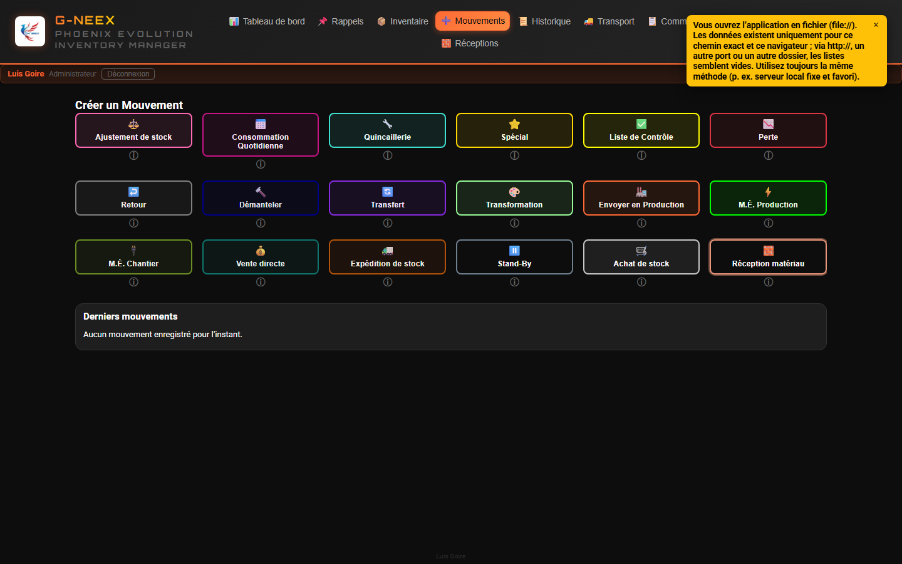
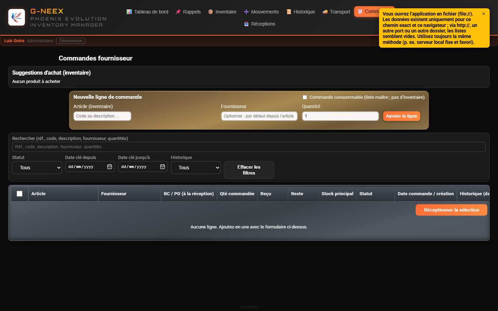
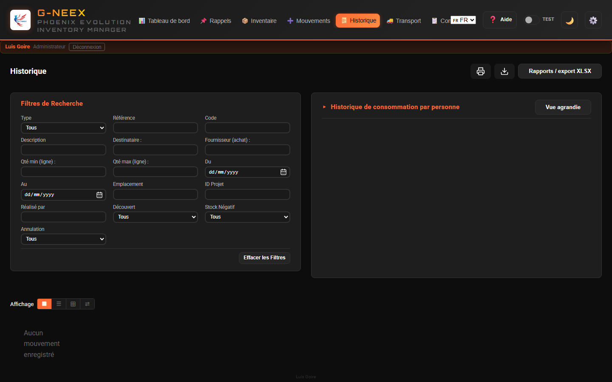
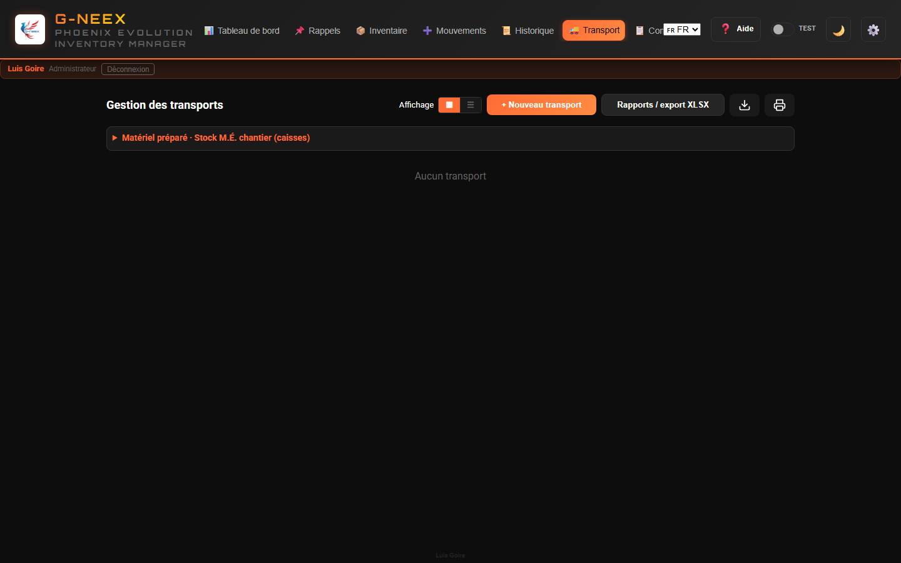
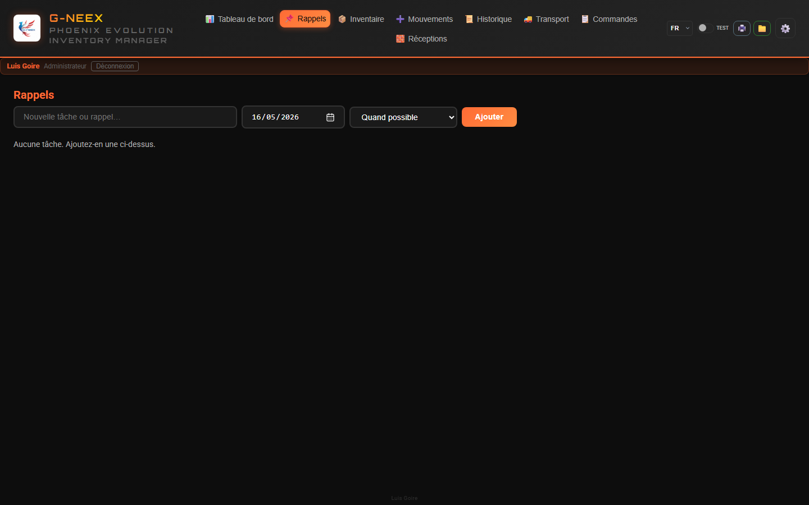

Phoenix Cell G-NEEX est développée par Luis Goire, par passion pour la programmation et dans une démarche d’apprentissage vers le métier de développeur.
Mis à jour : mai 2026 (v1.7)
Si vous arrivez de la 1.6, les points ci-dessous sont les seules nouveautés. Le reste du manuel reste valable.
--welcome-duration dans le CSS (par défaut 6 s) et sert aussi de marge de chargement réelle pour l'application. Un scanner vert Matrix (#00ff41) traverse lentement l'écran, les anneaux orbitaux se referment autour du logo, « BIENVENUE SUR » se révèle par balayage, « G-neex » clignote avec un fort effet néon avant de rester allumé, puis apparaissent « PHOENIX EVOLUTION » et votre nom. Une barre de progression linéaire couvre presque tout ce temps utile. L'écran ne se répète pas au rechargement de l'onglet ; il réapparaît à la prochaine connexion.stockPrincipal = max(actuel, somme(boîtes) + somme(emplacements)). Ne réduit jamais le principal.gneex-hosted-api : l'application reste 100 % hors-ligne ; GneexApiClient est préparé pour se connecter au backend.Phoenix Cell G-NEEX naît d’un besoin réel en milieu industriel : renforcer le contrôle des stocks lorsque seul un ordinateur était disponible, sans marge pour d’autres infrastructures.
Le point de départ était une feuille Excel qui, face aux incidents quotidiens et aux erreurs d’exploitation, s’est enrichie de macros et d’automatisation, problème par problème. Le dispositif est passé d’un tableau de pilotage à un gestionnaire d’inventaire intégré au classeur.
Ce travail est aussi devenu une formation pratique : automatiser des réponses à des problèmes concrets a consolidé des compétences en programmation et scripts. L’exploitation et l’apprentissage avançaient en parallèle.
Après une détérioration grave du fichier, récupéré au prix d’un long effort, le nom Phoenix — renaître de ses cendres — a été retenu. Cette feuille, restaurée et améliorée, est l’ancêtre direct et, en grande partie, l’ADN de l’application web G-NEEX.
La ligne Phoenix en tableur reste utilisée là où elle apporte encore de la valeur jusqu’à ce que G-NEEX atteigne une maturité suffisante pour un usage web quotidien. Ce logiciel constitue une étape vers un outil appelé à évoluer.
Le même texte est disponible dans l’application : ⚙️ Configuration → onglet Contexte.
Sous ⚙️ Paramètres se trouvent les outils de données, listes, éditeur d’articles, réceptions, préférences, etc. Ce manuel décrit le fonctionnement de G-NEEX et l’usage des écrans ; le déploiement et la politique d’exploitation sur votre site ne sont pas documentés ici.
L’onglet Import/Export est réservé au compte administrateur. Les autres profils — ni une élévation temporaire des droits — ne voient pas cet onglet ; à l’ouverture des paramètres, ils arrivent sur Contexte. On y regroupe la sauvegarde JSON complète (exporter/importer), la fusion « mouvements seuls », la fusion « transports expédiés », l’inventaire initial CSV/XLSX, archiver/réimporter les mouvements, supprimer la base et l’aperçu rapide des destinataires de consommation quotidienne. Les autres utilisateurs passent par Employés et les onglets autorisés pour leur profil.
Chemin : ⚙️ Paramètres → onglet Import/Export (administrateur uniquement)
GNEEX_Backup_YYYY-MM-DD_HH-MM-SS.json avec toutes les données (inventaire —emplacement par article, stock par emplacement/caisse et catalogue d’emplacements inclus— ; mouvements ; destinataires consommation ; fournisseurs ; transports ; lignes de commandes ; utilisateurs ; compteurs ; etc.)La sauvegarde complète sert d’abord de copie de sécurité ou de clonage d’un poste. Pour n’échanger que l’activité opérationnelle, utilisez aussi le flux exporter / importer uniquement les mouvements ci-dessous.
Ouvrez l’application déployée (par exemple en HTTPS) dans n’importe quel navigateur, à la même URL. Les données résident dans le localStorage de chaque appareil : rien ne se synchronise tout seul entre le PC et le mobile. Pour reporter la même copie de travail, l’administrateur doit exporter le JSON sur un poste puis l’importer sur l’autre (courriel, cloud, câble, etc.). La connexion et d’autres fonctions qui s’appuient sur la cryptographie du navigateur exigent HTTPS ou localhost ; si une erreur apparaît en ouvrant seulement une IP locale en http://, utilisez l’URL publique de déploiement ou le message affiché à l’écran.
Mouvements seuls (fusion d’activité) : Exporter uniquement les mouvements (GNEEX_Movements_….json) et Importer et fusionner échangent l’activité entre copies. La fusion ajoute seulement les mouvements dont l’id est absent sur la cible et applique le stock (réceptions matière recréées si le fichier le permet). Si l’id existe déjà, le mouvement local est conservé. Cela n’actualise ni les listes, ni les transports, ni le reste : les catalogues d’articles doivent rester cohérents ; des dates mêlées entre copies peuvent perturber l’ordre logique des stocks. Confirmez toujours la boîte de dialogue de l’application.
Note (sauvegardes et surdimensionnement) : La sauvegarde complète et le fichier mouvements seuls sérialisent les mouvements tels qu’en stockage local (champ technique hadOverdraft inclus). Le format et la fusion ne changent pas. Au démarrage, l’application peut normaliser des valeurs incohérentes pour Achat de stock et Réception de matériel. Dans l’historique, les filtres, les rapports XLSX et les exports lisibles, une règle cohérente s’applique : un achat ou une réception n’est pas traité comme surdimensionnement uniquement à cause d’un ancien indicateur erroné.
Aperçu rapide : ⚙️ Paramètres → Import/Export → « Destinataires (aperçu rapide) ». L’ajout et la suppression des noms restent dans l’onglet Employés.
Chemin : ⚙️ Paramètres → onglet Fournisseurs pour gérer la liste maître.
Les comptes avec accès à Commandes peuvent indiquer le fournisseur sur chaque ligne (texte libre ou suggestions issues de cette liste). Le numéro de BC/PO n’est pas saisi à la création de la ligne ; il est enregistré à la réception dans Mouvements → Achat de stock (avec bon de livraison).
Pour libérer de l'espace en supprimant les anciens mouvements :
GNEEX_Archived_Movements_FROM_to_TO_YYYY-MM-DD_HH-MM-SS.json est téléchargéLe JSON inclut une liste lisible movements (résumé) et _rawMovements avec copie complète de chaque mouvement tel qu’enregistré. Le champ de surdimensionnement dans la partie lisible suit la même règle que l’historique à l’écran ; _rawMovements conserve les données techniques sans réinterprétation.
Permet d'importer un fichier CSV ou XLSX avec l'inventaire initial. Les colonnes doivent correspondre au format attendu.
Vous pouvez utiliser le bouton icône de modèle pour exporter une feuille .xlsx avec le bon ordre de colonnes, l’en-tête stylisé (orange) et une ligne d’exemple modifiable. Vous pouvez aussi enregistrer en CSV depuis Excel avec le même ordre de colonnes.
SUPPRIMER TOUT (ou BORRAR TODO / DELETE ALL)Un texte de confirmation fixe limite les effacements accidentels ; sur les postes d’exploitation, suivez la procédure interne de votre site.
G-NEEX enregistre l'inventaire, les mouvements, les utilisateurs et la session dans le stockage local du navigateur (par exemple localStorage). Les mots de passe sont stockés sous forme de hash avec sel ; ils n’apparaissent pas en clair dans le code source de l’application. Toute personne ayant accès à l'ordinateur ou au profil utilisateur, ou une extension de navigateur malveillante, pourrait lire ou modifier ces données. L'application ne remplace pas un serveur central avec politique d'identité d'entreprise. Utilisez le verrouillage de session du système, des comptes nominatifs et des sauvegardes exportées selon la procédure de votre organisation. Lors d'une importation d'un fichier JSON de sauvegarde, vérifiez qu'il provient d'une source de confiance.
Chemin : ⚙️ Paramètres → onglet Édition d'article
À l’ouverture, si l’application demande un code de déverrouillage, suivez l’assistant (création ou saisie) et utilisez Déverrouiller pour continuer. Puis recherchez l’article par code ou description, modifiez les champs (code, description, catégorie, prix par défaut, stocks, emplacement, minimum, maximum, etc.) et Enregistrez.
Pour Emplacement, vous pouvez composer le texte avec plusieurs étiquettes séparées par une virgule ; la liste inclut les emplacements du catalogue effectif et BOX1…BOX51 (groupés) pour les ajouter avec Ajouter, en plus du catalogue éditable sur la même page Paramètres.
Si vous cochez Traiter comme consommable d’inventaire et cliquez sur Enregistrer, l’application ajoute automatiquement le nom (la description de l’article, ou le code s’il n’y a pas de description) à la liste ⚙️ Paramètres → Consommables, utilisée pour les réceptions d’achat sans inventaire et les commandes consommables. Si vous décochez cette option et enregistrez, elle retire de cette liste l’entrée qui correspondait à la description ou au code avant la modification (lorsqu’elle n’y figurait que par ce lien).
Le comportement du stock en mode consommable suit les écrans et messages de l’application.
Chemin : ⚙️ Paramètres → onglet Expirations
Saisissez identifiant et mot de passe. La session est validée dans le navigateur ; le compte administrateur peut gérer les utilisateurs et les mots de passe sous ⚙️ Paramètres → Utilisateurs.
Lors de l’ajout d’un utilisateur avec le rôle « Utilisateur », vous pouvez choisir un modèle : Superviseur et les profils de référence intégrés (ex. Keith Lake, invité, Patrick). Les anciens modèles opérateur ne sont plus proposés pour les nouveaux comptes. Chaque option affiche une courte description au survol (title). Pour un nouvel administrateur, sélectionnez le rôle Administrateur ; ce rôle n’utilise pas de modèle de matrice. Le détail des clés figure dans PlantillasPermisos.xlsx.csv à la racine du dépôt (documentation et future API).
Les images de fond de l’écran de connexion sont définies dans assets/login-bg-manifest.json (chemins sous assets/). En l’absence de liste ou si elle est vide, le logo est utilisé. Lorsque plusieurs images sont définies, elles peuvent défiler automatiquement.
Après connexion, vous accédez au panneau (voir §2.2).
À l'entrée dans l'application, un panneau s'affiche avec les informations du jour. La barre supérieure contient les accès aux modules (p. ex. 📦 Inventaire — §2.3) :

| Carte | Ce qu'elle affiche |
|---|---|
| Mouvements du jour | Nombre de mouvements créés aujourd'hui, avec répartition par type |
| Alertes actives | Stock bas + stock négatif + articles bientôt expirés |
| Transports en attente | Transports non expédiés ni annulés |
| Dernière sauvegarde | Date de la dernière sauvegarde (alerte si plus de 7 jours ou jamais) |
Cliquer sur Masquer / Afficher pour réduire/développer le panneau.
Vue en cliquant sur Inventaire (📦) dans la barre : recherche, filtres, cartes et tableau.

Saisir dans le champ de recherche pour filtrer par code, description, catégorie ou emplacement.
À côté du champ de recherche, le bouton ⋮ regroupe les actions d’inventaire : exporter en XLSX, imprimer, afficher ou masquer les bandes de filtre en ligne (Caisse / emplacement, Dépôt, Consommable inv.), filtres « problèmes » et « alerte stock bas désactivée », vue Stock à date, résumé par caisse, gestion par caisse, etc.
La première entrée est Masquer les filtres en ligne (chevron vers la droite) : elle referme en une fois les trois bandes lorsqu’au moins une est ouverte et remet chaque liste sur Tous si nécessaire. Elle est désactivée lorsqu’aucune bande n’est ouverte ; sinon elle permet de réduire la zone de filtres sans action répétée sur chaque type de filtre.
Utiliser le filtre à date pour consulter l'inventaire tel qu'il était à une date sélectionnée. Quand il est actif, il impacte tableau, cartes et sorties export/impression.
Les cartes supérieures affichent :
Cliquer sur n'importe quelle carte (sauf « totaux ») ouvre un modal de détail avec la liste des articles concernés, option d'exporter en XLSX et d'imprimer.
Dans le modal stock bas, les premières colonnes sont Ignorer l'alerte de stock bas, Actions (🛒 pour ajouter l'article à la liste d'achat), Code, puis les autres champs (description, stocks, dates, emplacement).
Colonnes : Code, Description, Catégorie, Prix par défaut, Stock Principal, Stock Production, Stock Transformation, Emplacement, Expiration.
Dans la colonne Description, l’icône 📝 (plus discrète si l’article n’a pas encore de notes) ouvre, lorsqu’elle est active, une fenêtre pour voir et modifier les notes ; Enregistrer enregistre les changements. Si l’édition n’est pas proposée mais l’article a des notes, la même fenêtre s’ouvre souvent en lecture seule ; sans notes, la cellule reste du texte simple.
Les couleurs des lignes et des cellules indiquent l'état de l'article (rouge = négatif, jaune = bas, orange = bientôt expiré, vert = correct, etc.). En outre : un léger surlignage violet/indigo avec contour sur toute la ligne correspond à la ligne sélectionnée au clavier (flèches haut/bas dans le tableau). Une barre verticale violette sur la première cellule (code) seule indique un article consommable d'inventaire. Dans la cellule stock principal, un encadré violet peut signifier un surstock (au-dessus du maximum configuré).
Si la fenêtre est étroite, faites défiler le tableau horizontalement pour voir toutes les colonnes sans comprimer les en-têtes.
Emplacement (champ texte de l’article) : pour les validations (mouvements, imports, cohérence des stocks), seules les étiquettes du catalogue d’entrepôt effectif et les références BOXn comptent comme emplacement canonique. Si le texte enregistré ne peut pas être entièrement normalisé vers ces jetons, un avertissement peut s’afficher à l’enregistrement depuis l’éditeur ; aucun marqueur automatique de réaffectation n’est plus inséré.
Le menu Caisse / emplacement sert au filtrage visuel rapide selon le numéro déduit du texte d’Emplacement, selon les numéros de caisse avec stock dans la gestion par caisse, et selon les emplacements d’entrepôt du catalogue interne (ex. E1R, ETOP, BIN 8, CONTAINEUR CHANTIER, ARMOIRE AVEC CLE) lorsque le texte correspond ou que le même emplacement figure uniquement dans le stock par emplacement (pastilles avec quantités) ; des pastilles s’affichent à côté de la cellule. À côté d’exporter et imprimer, Résumé par caisse (selon emplacement) regroupe les articles lorsque l’emplacement ressemble à BOX1, BOX 1 ou variantes (« box », « caja » + nombre ; espace après BOX facultatif). Plusieurs caisses peuvent figurer dans le même champ, séparées par des virgules (ex. « BOX1, caja 2 »). Dans la fenêtre, cliquez une ligne pour voir les articles du groupe. Si un article contient plusieurs caisses dans l’emplacement, il est compté dans chaque caisse détectée. En plus, via Gestion du stock par caisse, vous pouvez ajouter, modifier, supprimer et répartir du stock entre caisses et les colonnes Stock production / Stock transformation ; vous pouvez aussi transférer d’une caisse vers un emplacement direct (sans caisse). Cette action déduit la caisse d’origine, ajoute l’emplacement au texte de l’article (sans doublon) et enregistre une quantité par emplacement (pastilles comme E2R: 12) dans la cellule Emplacement. Vous pouvez aussi exporter tout le stock par caisse (même mise en page que le modèle) pour sauvegarde ou modification puis le réimporter, télécharger un modèle vide si besoin, et importer des quantités par caisse. La première ligne officielle est Codigo, Caja, UbicacionCaja, CantidadCaja, CantidadCajas, Vacia (feuille Datos, celle produite par G-NEEX). Dans Vacia, utilisez 1/true/oui pour marquer la caisse comme vide (force quantité 0). Pour les mouvements de sortie/consommation, la caisse est optionnelle : si elle est choisie, la quantité est déduite de la caisse et du stock principal ; sinon, elle est déduite uniquement du stock principal.
Test rapide recommandé (Emplacement) :
BOX1E1R ou e1r (insensible à la casse)BIN 8, BIN2 ou BIN 2CONTAINEUR CHANTIERBOX1, BOX2caja 3, BOX4sans caisseBOX52 (hors plage, ignoré)BOX1, BOX1 (la même caisse n’est pas dupliquée)Les fenêtres d’impression utilisent le papier A4 portrait (marges standard) ; les tableaux ne compriment pas toutes les colonnes à la même largeur (le code article reste sur une ligne et lisible) ; les autres textes longs sont renvoyés dans la cellule si besoin (inventaire, historique, détail de mouvement et autres listes imprimables).
Exporter et imprimer ici requièrent que ces boutons soient visibles et actifs.
Onglet Mouvements (➕) : grille de types ; formulaire en fenêtre superposée.

Si toutes les quantités sont 0, l’application refuse de traiter le mouvement (aucun changement de stock).
Utilisez Créer et Traiter le mouvement lorsqu’ils sont affichés ; s’ils restent inactifs, le formulaire ou l’action n’est pas habilité pour l’état en cours.
| Type | Effet sur le stock | Projet |
|---|---|---|
| Ajustement | Ajoute ou soustrait | Facultatif |
| Consommation Quotidienne | Soustrait | Automatique |
| Quincaillerie | Soustrait | Obligatoire |
| Spécial | Ajoute ou soustrait | Facultatif |
| Liste de Contrôle | Soustrait | Obligatoire |
| Perte | Soustrait | Obligatoire |
| Retour | Ajoute | Facultatif |
| Démantèlement | Ajoute | Obligatoire |
| Transfert | Ajoute ou soustrait | Facultatif |
| Transformation | Soustrait | Facultatif |
| Envoi en Production | Soustrait | Facultatif |
| M.É. Production | Soustrait | Obligatoire |
| M.É. Chantier | Soustrait | Obligatoire |
| Stand-By | Sans effet (en attente) | Facultatif |
| Achat de Stock | Ajoute | Formulaire spécial |
| Réception de Matériel | Ajoute (ou provisoire selon les règles de catégorie) | Obligatoire |
Les mouvements Stand-By sont enregistrés comme brouillons sans affecter l'inventaire :
Liste des Stand-By : Affiche les brouillons en attente avec les options :
Avec la session active, il existe jusqu'à deux accès flottants (coin inférieur droit par défaut), masqués au départ. Pour afficher la bulle Stand-by ou Consommation quotidienne, ouvrez Mouvements et sélectionnez le type correspondant ; la bulle reste visible tant que vous ne la masquez pas.
| Bulle | Rôle |
|---|---|
| Stand-by (⏸) | Accès rapide aux brouillons Stand-by en attente ; panneau avec liste, lien vers Mouvements ou masquage de la bulle. |
| Consommation quotidienne (📅) | Panneau des lignes de type Consommation quotidienne pas encore traitées en un seul mouvement. |
Consommation quotidienne (clôture et rattrapage) : les lignes en attente sont associées au jour local. S'il reste des lignes d'un jour précédent, un message peut s'afficher et une clôture / récupération automatique peut s'exécuter si les règles de stock le permettent ; sinon vérifiez le panier manuellement. Ce flux n'utilise pas de numéro de projet dans le formulaire. Tant que le type Consommation quotidienne est sélectionné dans Mouvements, la clôture automatique nocturne (≈23 h) et le passage de jour ne vous interrompent pas ; en passant à un autre type de mouvement, la clôture en attente est tentée si c'est pertinent.
Date et heure du mouvement (Consommation quotidienne) : à chaque ajout d'une ligne au panier, l'instant est enregistré. Lors du traitement, la date enregistrée pour le mouvement est celle du premier article ajouté au panier dans ce lot (si une ancienne ligne n'avait pas d'horodatage, l'heure du traitement sert de secours).
Décimales : les quantités et stocks sont affichés et enregistrés avec au plus quatre chiffres après le séparateur décimal (arrondi).
Destinataire « Autre (nom non listé) » : saisissez librement le nom lorsqu'il n'est pas dans la liste déroulante. Cette section demande seulement d'indiquer qui reçoit le matériel ; il n'y a pas de classification supplémentaire.
Registre éditable dans l’Historique : dans Historique → Consommation quotidienne par destinataire, vous pouvez modifier directement le nom du destinataire dans le tableau, enregistrer les modifications et nettoyer le tableau visible (selon les filtres personne/code) quand vous voulez épurer ce registre.
Les mouvements qui retirent du stock au-delà du disponible (consommation, transferts, envoi en production, etc.) peuvent ouvrir un modal avec motif obligatoire et être marqués dans l’historique avec l’indicateur (! et détail).
Achat de stock et Réception de matériel sont des entrées : elles n’utilisent pas ce flux de justification « surdimensionnement ». Si d’anciennes données comportaient par erreur ce marqueur sur ces types, l’application ne l’affiche pas comme surdimensionnement dans les listes, filtres et détail, peut corriger l’enregistrement au chargement, et les rapports suivent la même règle.
Lors de la libération d’un Stand-by, le calcul d’éventuel surdimensionnement utilise le type cible du Stand-by (pas le type momentanément sélectionné dans le formulaire Mouvements), afin d’éviter les faux positifs.
AJU000042, achat COM000003). Les anciennes références avec plus de chiffres, uniquement numériques ou avec tiret sont normalisées au chargement de l’historique.Chemin : onglet Commandes (icône 📋 dans la barre supérieure).

Planifier des lignes liées à l'inventaire (code, description, fournisseur, quantité). Le numéro de BC/PO est enregistré à la réception dans Achat de stock (bon de livraison), pas à la création du brouillon.
Au-dessus du tableau, vous pouvez changer l’Affichage entre tableau détaillé (par défaut) et mosaïque de cartes ; le choix est enregistré dans ce navigateur.
Au-dessus du tableau, vous pouvez filtrer les lignes par :
Effacer les filtres réinitialise tout.
| État | Signification |
|---|---|
| Inactive | Brouillon ; édition quantité et fournisseur. |
| Commandée | Commande confirmée ; date enregistrée ; en attente de réception. |
| Réception partielle / totale | Selon la quantité reçue par rapport à la commande. |
| Annulée | Uniquement si aucune réception. |
En cliquant sur Réception partielle ou Réception totale (reste), l'application passe à Mouvements, sélectionne Achat de stock et préremplit le formulaire. Vérifier puis Traiter le mouvement. Si l'article ou la quantité ne correspond plus à la ligne, l'achat peut être enregistré sans lien (avertissement).
Achat saisi seulement dans Mouvements (sans passer d’abord par Commandes) : après Traiter le mouvement, s’il existe une ligne Commandée ou réception partielle pour le même article d’inventaire — et, si un fournisseur a été saisi sur l’achat, le même fournisseur — un dialogue peut demander si cet achat correspond à cette commande ouverte. Les boutons sont Oui / Non (Non refuse seulement le lien ; le mouvement reste enregistré). En cas de confirmation, la colonne Reçu, le statut et les actions se mettent à jour comme une réception lancée depuis le panneau (y compris partiel / surplus). Sinon, on peut proposer d’enregistrer l’achat comme nouvelle ligne de commande (également Oui / Non).
Chaque ligne affiche une référence du type #AJU000012 (sigle + numéro par type ; les anciennes lignes peuvent rester purement numériques) et une chronologie.
Si l'achat provient du panneau Commandes, le détail du mouvement affiche un encadré ; la liste peut afficher 📋.
L’édition des lignes, les réceptions et l’export XLSX du panneau dépendent des actions et boutons visibles en utilisant Commandes et Mouvements sur votre copie.

L'onglet Historique affiche les mouvements filtrés avec couleur et icône selon le type.
Au-dessus de la grille, le sélecteur Affichage propose Mosaïque (icônes en grille, par défaut), Liste (lignes compactes, style explorateur), Détails (tableau à colonnes) ou Carrousel chronologique (cartes en séquence horizontale du plus récent au plus ancien ; la bande supérieure et chaque carte affichent jour, mois en 3 lettres, année sur 4 chiffres et heure locale ; les flèches latérales avancent d’un mouvement). Les cartes minimisées affichent aussi l’ID projet quand il s’applique. La préférence est enregistrée dans ce navigateur.
Format des dates : dans toute l’application, les dates affichées utilisent le jour, le mois en trois lettres et l’année sur quatre chiffres ; avec l’heure, c’est l’heure locale en 24 h (inventaire, tableaux, rappels, transport, métadonnées lisibles dans les exports, etc.).
Les mouvements entièrement annulés et les annulations partielles (certaines lignes annulées sans annuler tout le mouvement) apparaissent en Mosaïque, Liste et Carrousel sous forme de tampon diagonal (cadre en pointillés incliné) ; le libellé « Annulation partielle » correspond au second cas. Dans la vue Détails et dans la fenêtre modale, l’état reprend la même formulation.
Vous pouvez filtrer par :
Effacer les filtres réinitialise tous les critères.
Cliquer sur une carte, une ligne de liste ou une ligne du tableau de détails pour ouvrir le même modal de détail complet :
Adjuntos/… ; utilisez « Copier le chemin (ancienne version) » et ouvrez depuis l’explorateur.Dans le modal de détail :
L’annulation ou le retour en arrière dans le détail exige que le modal affiche ces actions actives (selon le type et l’état du mouvement).
Bouton Transport (🚚) dans la barre : l’onglet affiche le tableau et les actions (créer, expédier, supprimer, etc.) selon ce qui apparaît actif.

Affiche des cartes pour chaque transport avec : projet, date d'expédition, état des lignes (Prêt/Partiel), réceptions liées.
Le sélecteur Affichage permet Mosaïque (grille de cartes) ou Liste (une colonne de cartes en pleine largeur) ; la préférence est enregistrée dans ce navigateur.
Cliquer sur une carte pour développer son détail. Dans le détail développé, Pièces jointes (📎) lie des documents d’expédition depuis n’importe quel dossier (sans copie dans l’app) ; affichage avec Chrome/Edge comme pour les mouvements.
En haut de l’onglet, un résumé Matériel préparé au départ indique, pour chaque transport actif (non expédié, non annulé), les listes de contrôle, les mouvements M.É. chantier et production liés au projet et les réceptions du projet pas encore marquées comme expédiées. Une section file d’attente peut apparaître lorsqu’il n’y a pas encore de transport actif pour ce projet.
En cliquant sur Expédier le camion, l’application enregistre la sortie et marque comme expédiés les mouvements liste de contrôle, M.É. chantier et M.É. production de cet envoi, ainsi que les réceptions du même projet encore en attente d’expédition (plusieurs camions : chaque expédition ne marque que ce qui restait en attente). Le détail du mouvement dans l’historique affiche la date une fois parti avec un transport. Annuler l’expédition, réactiver la planification ou supprimer le transport annule ces marques liées à ce transport.
Si une action n’est pas disponible, le contrôle correspondant est inactif ou absent.
Les mouvements de type Liste de Contrôle et M.É. Chantier créent ou lient des transports automatiquement. Si un transport actif existe déjà pour le projet, les lignes sont ajoutées au transport existant.
Les opérations sensibles (p. ex. Expédier, Supprimer) ne s’activent que lorsque l’état des lignes le permet.
Les fichiers sont nommés de manière descriptive avec la plage de dates (extension .xlsx ; feuille « Datos » avec style du thème et feuille « Info » avec métadonnées) :
GNEEX_All_Movements_2024-03-15_to_2026-04-15.xlsxGNEEX_Item_Consumption_cable_2025-01-10_to_2026-03-20.xlsxUtilisez le bouton de rapport ou le téléchargement XLSX lorsqu’il est visible ; choisissez le type dans la boîte de dialogue.
Chemin : ⚙️ Paramètres → onglet Réceptions
Tableau avec toutes les réceptions enregistrées. Elles peuvent être recherchées par texte.
Éditer et Supprimer nécessitent que ces actions soient actives sur la ligne (selon votre copie et le mouvement lié).
Les préférences de thème et de langue sont enregistrées automatiquement. L'instantané du mode démo est indépendant de la sauvegarde JSON. Remarque : les fichiers exportés vers un dossier sur l'ordinateur pendant la démo (par ex. XLSX dans le dossier du projet) ne sont pas supprimés à la sortie ; seul le localStorage du navigateur est restauré.
La barre supérieure affiche notamment l’indication de la session, un résumé de rôle ou de mode (selon votre version) et Se déconnecter pour revenir à l’écran d’accès.
Selon le contexte (tâche, état des données, onglet), certaines actions sont estompées ou un bref message indique qu’elle ne s’applique pas. Ce n’est pas un dysfonctionnement : dans un autre flux, le même contrôle peut redevenir utilisable.
Chemin : bouton de rappels dans la barre, onglet Rappels lorsqu’il est accessible.

Depuis cet écran, on crée et gère les rappels opérationnels avec date cible et priorité, lorsque le module est visible dans votre environnement.
L’application est réalisée par Luis Goire, par passion pour la programmation et dans une perspective de formation vers le métier de développeur.
E-mail : blakillbyte@gmail.com
Le manuel parcourt l’inventaire, les mouvements, les commandes fournisseurs, l’historique, le transport, les réceptions dans la configuration, les rapports, l’import/export de données et le mode démo. Chaque module s’utilise avec les onglets et boutons visibles : lorsqu’une action ne convient pas, l’interface la désactive ou la masque sans bloquer le reste du travail.